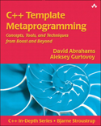

| 首页 / 资源 |

如果本文档未能完全满足你对元编程的兴趣, 我们收集了一些我们认为你可能喜欢的其他资源. 最值得注意的是, 由 David Abrahams 和 Aleksey Gurtovoy 撰写的 "C++ Template Metaprogramming: Concepts, Tools, and Techniques from Boost and Beyond" 一书, 被认为是当今对该主题最权威、最新的论述. 本文档附带的教程实际上就是该书的节选.
其他值得注意的图书资源包括 Andrei Alexandrescu 的 "Modern C++ Design: Generic Programming and Design Patterns Applied"——Andrei 在其中探讨了将 C++ 元编程技术应用于实现高度可复用、可配置的泛型设计——以及 David Vandevoorde 和 Nicolai M. Josuttis 的 "C++ Templates - The Complete Guide", 这是关于 C++ 模板系统细节和运作机制的权威之书.
我们还可以推荐一些在线资源:
最后, 如果你遇到你认为应该列在这里的高质量、值得关注的相关作品, 请告诉我们!